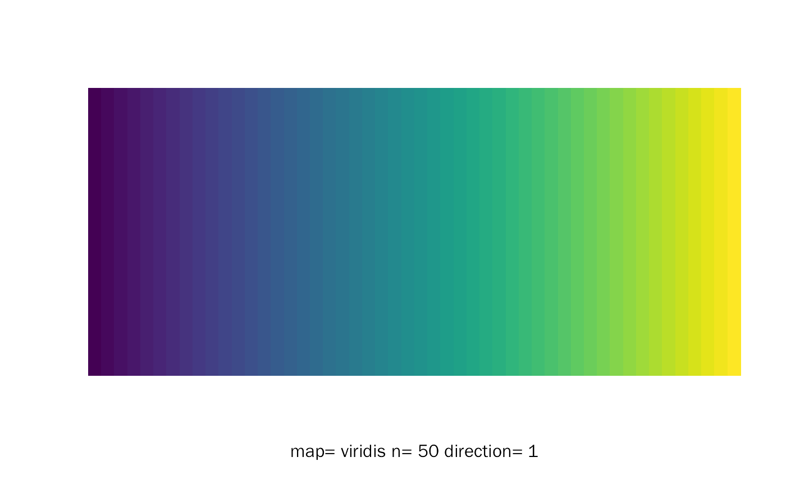
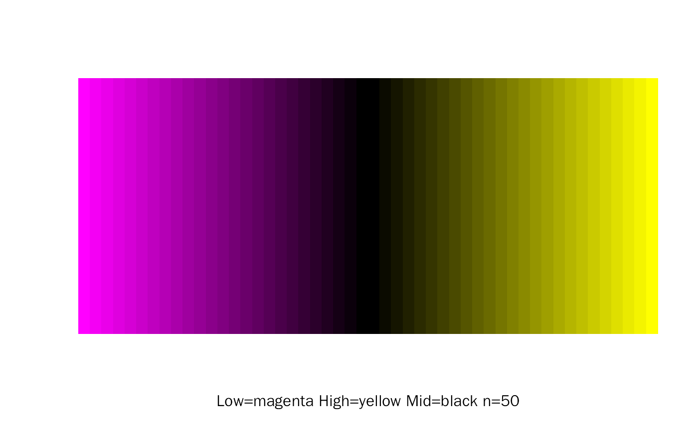

ContinuousColorMap.RdCreate Continuous Color Map.
ContinuousColorMap( n = 50, direction = 1, maps = NULL, low = "white", high = "red", mid = NULL, ... )
| n | The number of colors (≥ 1) to be in the palette. |
|---|---|
| direction | Sets the order of colors in the scale. If 1, the default, colors are ordered from darkest to lightest. If -1, the order of colors is reversed. |
| maps | Existing color maps, chosen from "magma","inferno","plasma","viridis","cividis","rocket","mako","turbo".
Default: NULL (use |
| low | The low color. Default: white. |
| high | The high color. Default: red. |
| mid | The mid color. Default: NULL. |
| ... | Parameters for |
A vector of colors.
#> [1] "#440154FF" "#46085CFF" "#471064FF" "#48176AFF" "#481F70FF" "#482576FF" #> [7] "#472C7AFF" "#46337EFF" "#443983FF" "#423F85FF" "#404588FF" "#3E4A89FF" #> [13] "#3C508BFF" "#39568CFF" "#365C8DFF" "#34618DFF" "#31668EFF" "#2F6B8EFF" #> [19] "#2D718EFF" "#2B758EFF" "#297A8EFF" "#277F8EFF" "#25848EFF" "#23898EFF" #> [25] "#218E8DFF" "#20928CFF" "#1F978BFF" "#1E9D89FF" "#1FA187FF" "#21A685FF" #> [31] "#25AB82FF" "#29AF7FFF" "#30B57CFF" "#38B977FF" "#40BD72FF" "#4AC16DFF" #> [37] "#55C568FF" "#5FCA61FF" "#6BCD5AFF" "#77D153FF" "#84D44BFF" "#91D742FF" #> [43] "#9FDA3AFF" "#ACDC30FF" "#BADE28FF" "#C8E020FF" "#D6E21AFF" "#E4E419FF" #> [49] "#F1E51DFF" "#FDE725FF"# create color map with low, high, mid. ContinuousColorMap(maps = NULL, low = "magenta", high = "yellow", mid = "black")#> [1] "#FF00FF" "#F400F4" "#EA00EA" "#DF00DF" "#D500D5" "#CA00CA" "#BF00BF" #> [8] "#B500B5" "#AA00AA" "#9F009F" "#950095" "#8A008A" "#800080" "#750075" #> [15] "#6A006A" "#600060" "#550055" "#4A004A" "#400040" "#350035" "#2B002B" #> [22] "#200020" "#150015" "#0B000B" "#000000" "#000000" "#0B0B00" "#151500" #> [29] "#202000" "#2B2B00" "#353500" "#404000" "#4A4A00" "#555500" "#606000" #> [36] "#6A6A00" "#757500" "#808000" "#8A8A00" "#959500" "#9F9F00" "#AAAA00" #> [43] "#B5B500" "#BFBF00" "#CACA00" "#D4D400" "#DFDF00" "#EAEA00" "#F4F400" #> [50] "#FFFF00"